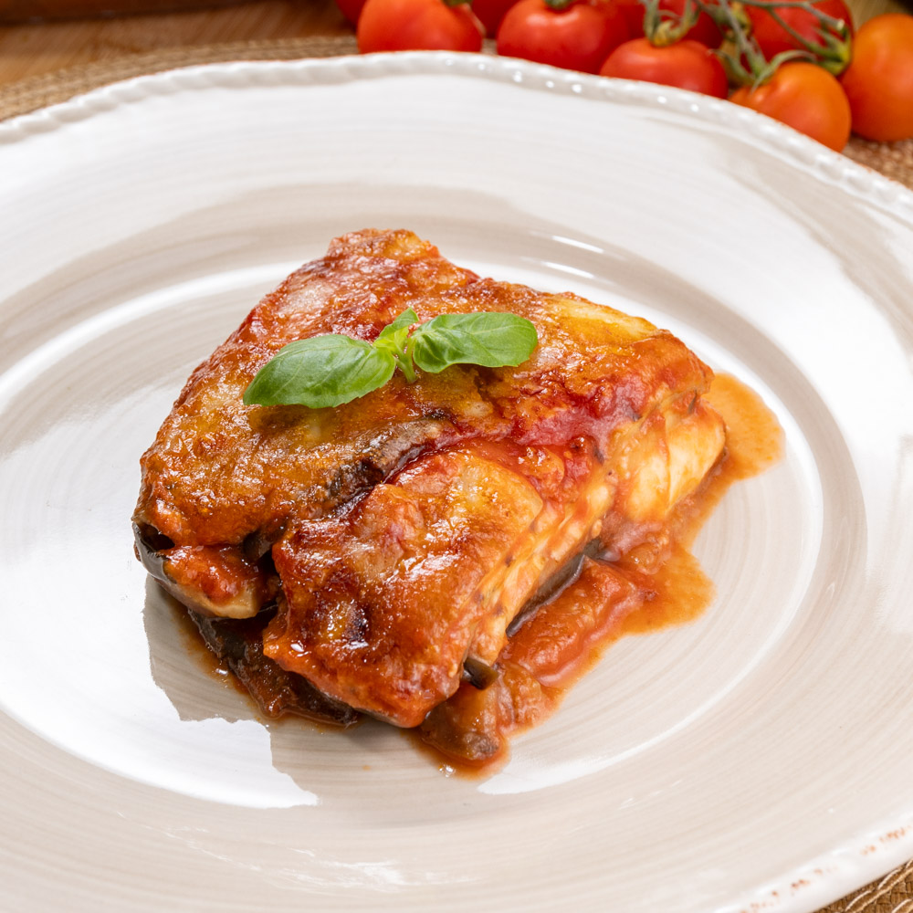

A traditional Italian dish made with layers of tender fried eggplant, rich tomato sauce, mozzarella and grated Parmesan cheese.
Baked until golden and bubbling, this comforting recipe is perfect for a family meal and bring the authentic flavors of Italian cuisine to your table.
Wash the eggplants and slice them into thin rounds. Sprinkle with salt and let them rest for 20-30 minutes, then pat them dry.